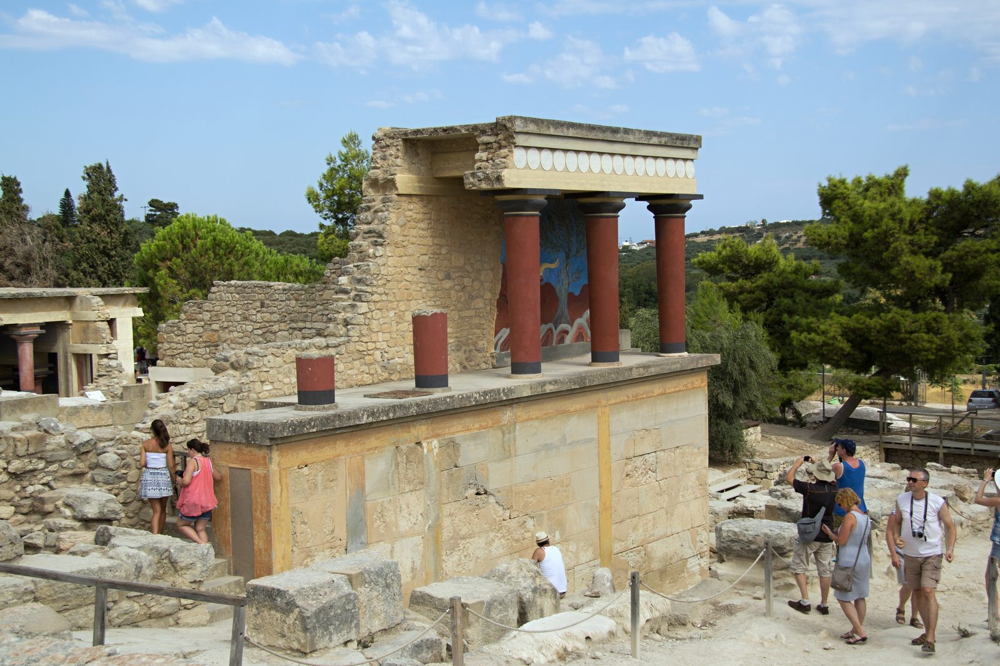
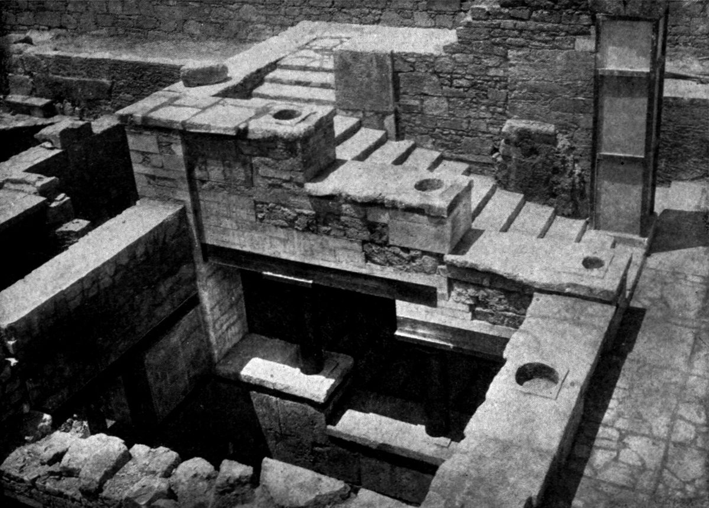
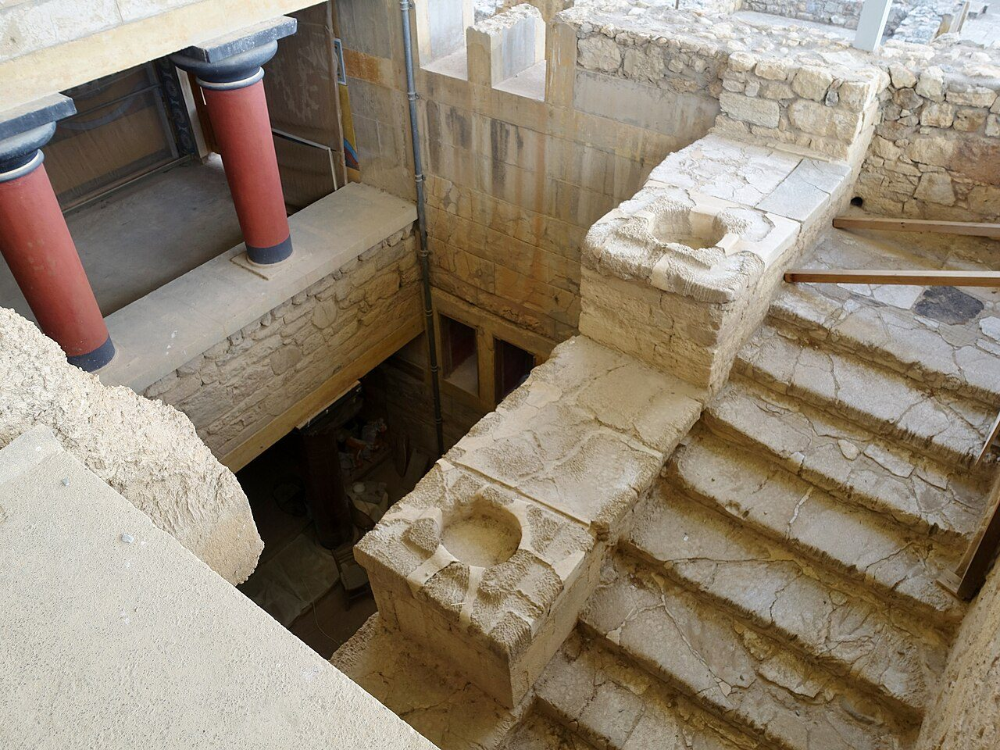
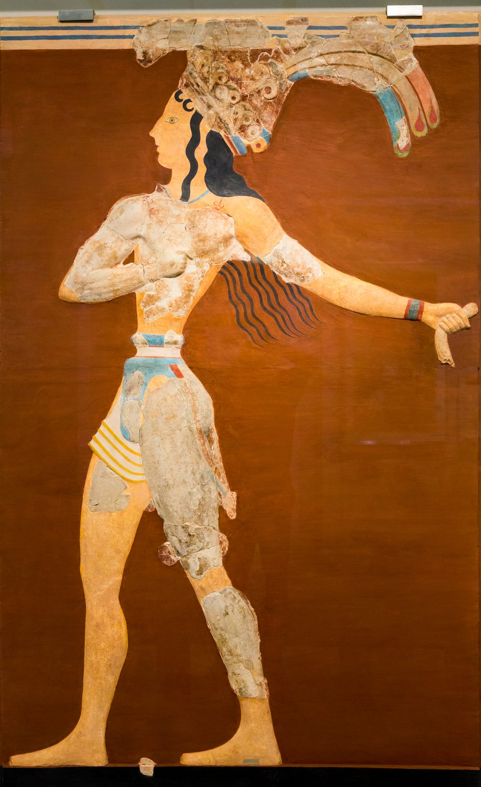
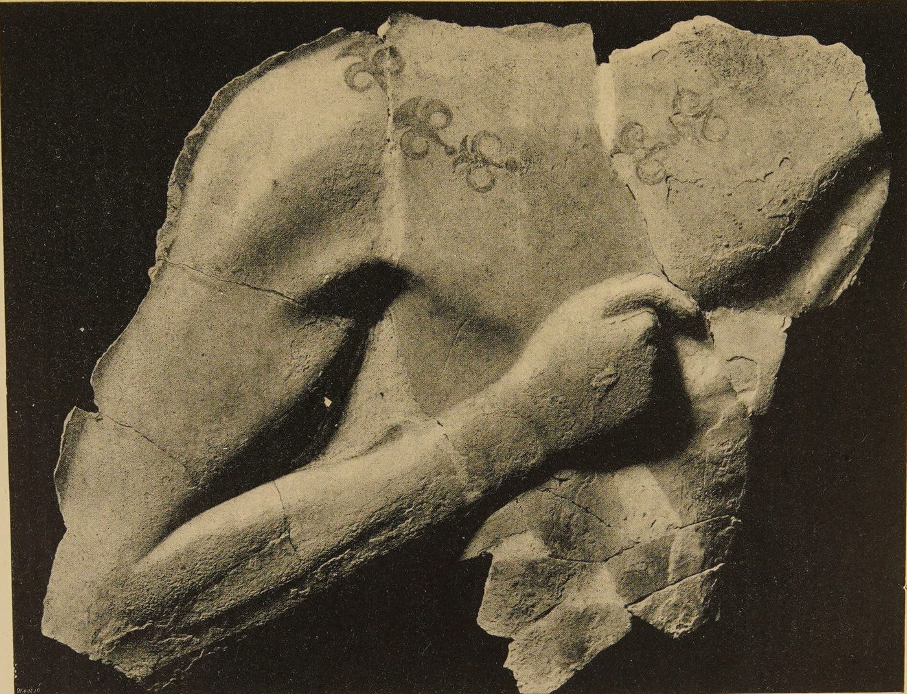
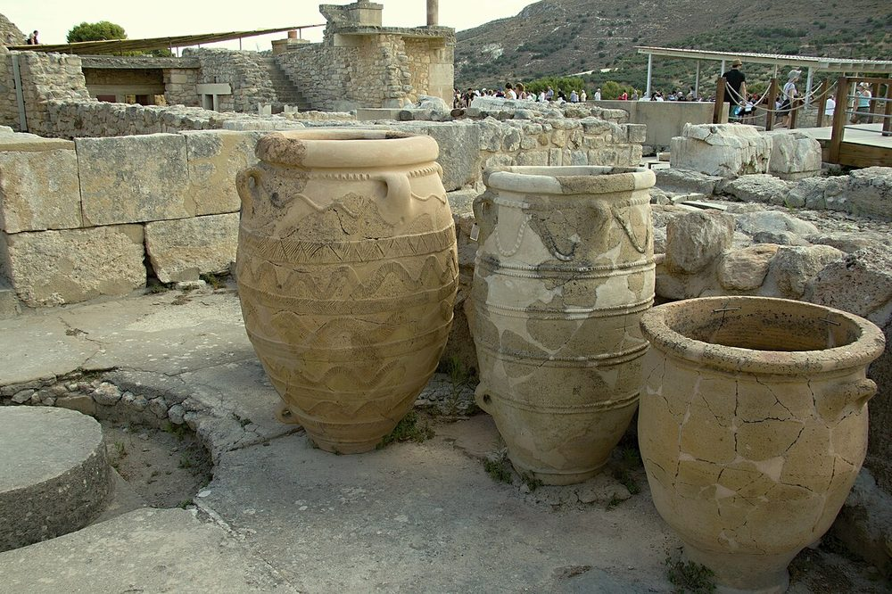
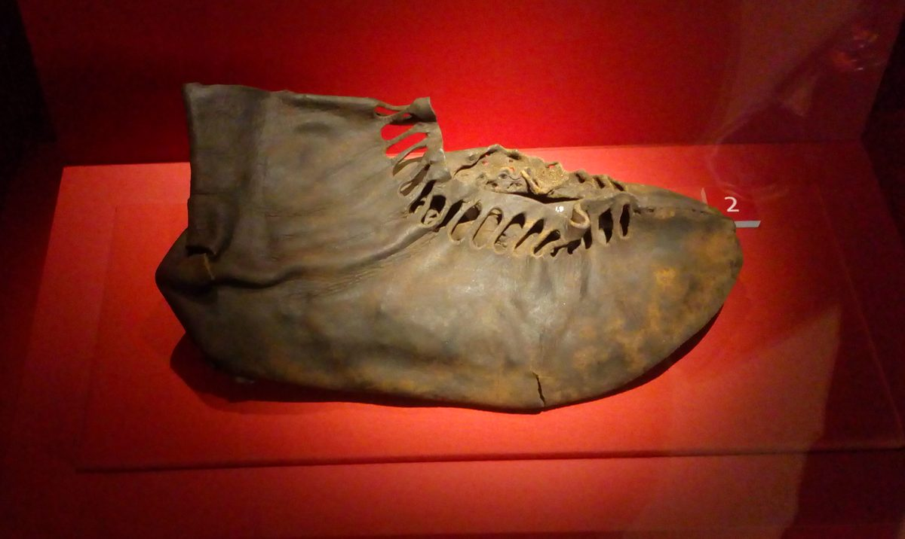

Unit 1 · The investigation of ancient sites and sources · Lesson 7
Reconstructing the past: beliefs, gaps and provenance
When the evidence is broken, missing or taken from its place, how much can we really know?
Year 11 Ancient History · Present with → or space · Read on a phone with R

Review · books closed · 6 minutes · press K for the timer
Six questions from Lessons 1–6
- What do the five letters of OVPRL stand for, in order? Origin, Value, Purpose, Reliability, Limitations.
- Name one survey method and what it can find without digging. Ground-penetrating radar: radar pulses detect buried features. (Or magnetometry: buried ditches, pits and burnt areas; or LiDAR: the shape of the ground, even under trees.) Survey finds features; it does not date them.
- Why did Darius I have the Behistun inscription carved? To justify (legitimise) his right to rule: it presents his kingship as granted by Ahuramazda and gives his own version of how he took the throne. It was carved high on a cliff beside a main road, to be seen rather than read.
- Give one value of petroglyphs as a source. They are images people chose to make, still in the place where they were made, and some are many thousands of years old (Murujuga has one of the world’s largest collections).
- Who holds the knowledge of what Aboriginal rock engravings mean, and who decides what is shared? Aboriginal Custodians (the Traditional Owners) hold it as Cultural Knowledge, and they decide what is shared, under their own protocols (their ICIP rights). Outsiders cannot read the meaning from the image alone.
- Name two methods of authentication. Any two: scientific dating (radiocarbon, thermoluminescence); material or chemical analysis (fluorine tests from 1949 helped expose Piltdown Man, shown to be a forgery in 1953); microscope study of tool marks; stylistic comparison; provenance research.
Mark your own answers in a different colour. Which question did you find hardest?
Learning intentions and success criteria · 2 minutes
Today’s goals
- understand the challenges of reconstructing the past from archaeological sources
- distinguish evidence from interpretation in a reconstruction
- explain two challenges of reconstructing the past, with an example of each
- explain why provenance matters
- identify which parts of a reconstruction are evidence and which are interpretation
Syllabus outcomes: AH-11-05 analyses different types of sources for evidence to support a historical account or argument · AH-11-06 explains differing interpretations and representations of the past · AH-11-07 communicates historical understanding, applying historical knowledge, terms and concepts. Life Skills: AH-LS-09 identifies different interpretations of the past · AH-LS-10 compares representations of the past.
Note-making · the routine for the whole course
How to structure your notes
questions and key terms, written after
short phrases, arrows (→ leads to), abbreviations (c. = about; BCE = Before the Common Era)
- 1Rule up the page firstA cue column about a quarter of the page wide; title and date at the top; room for a summary at the bottom.
- 2Listen and look, then writeDon’t copy while a slide is being explained. Phrases, not sentences.
- 3Write your own notes at each ✎ checkpointThen compare with the model notes, one row at a time. Add what you missed in a second colour.
- 4Write the cue questions afterwardsUse exam verbs: explain, analyse, assess. To revise, cover your notes and answer the cues.
- 5Finish with a three-sentence summaryTwo checkpoints today: reconstructing beliefs (Knossos and the mystery room) · gaps and provenance.
Key vocabulary · add to the unit word wall
Words for reconstructing the past
| Evidence and interpretation | Meaning |
|---|---|
| evidence | Information from a source that is used to answer a particular historical question. |
| reconstruction | A modern rebuilding or picture of how something looked in the past — evidence of what its maker imagined, not direct evidence of the past. |
| interpretation | An explanation of what the evidence means, made by a historian or archaeologist; it can be questioned and changed. |
| contestability | Recognising that interpretations and representations of the past are debated and can change with new evidence. |
| relief | Carving or moulding that stands out from a flat background. |
| Gaps and provenance | Meaning |
|---|---|
| organic material | Material that was once alive, such as wood, leather, wool, linen or food. It usually decays unless conditions are special. |
| inorganic material | Material that was never living, such as stone, pottery, metal and glass. It usually survives better. |
| context (archaeological) | The exact place and layer an object was found in, and what was found with it. |
| provenance | Where an object was found and its history of ownership since; without it, an object loses its context and may be a fake. |
| looting | Digging up or stealing objects to keep or sell, with no record of where they came from. |
1 · Reconstructing beliefs · I do — Knossos, Crete
Arthur Evans rebuilt the ‘Palace of Minos’


Compare the two photos. What is evidence, and what is reconstruction?
Evidence: the gypsum steps, the balustrades and the round sockets where columns once stood. Reconstruction: the upper floors and today’s red-and-black concrete columns. Look closely: even the 1911 photo shows an early stage of the rebuilding, with iron beams holding up the landings and replacement columns in the hall below. Evans had a real reason (the building was collapsing), but what visitors see now mixes the Bronze Age with the 20th century.
- Who: Arthur Evans, a British archaeologist, excavated at Knossos from 1900 to 1931
- What: a Bronze Age building in use from about 1900 to 1350 BCE, which he called the ‘Palace of Minos’ (Minos is a king of Crete in Greek legend)
- How: his architects first propped up collapsing floors with iron girders and stone column shafts under stucco; from the 1920s they rebuilt floors and columns in reinforced concrete
To relax our efforts meant that the remains of the Upper Stories would have crashed down on those below, and the result would have been an indistinguishable heap of ruins.
Arthur Evans, The Palace of Minos at Knossos, vol. III (London, 1930), p. 288
1 · Reconstructing beliefs · I do — think aloud · evidence or interpretation?
The ‘Priest-King’: what survives, and what was added?

In May 1901, on the south side of the palace: broken pieces of painted plaster relief. They include parts of a crown of lilies and plumes, a man’s chest with a lily necklace and a bent right arm, part of a thigh and leg, and another arm.
Which parts are evidence?
The cracked, uneven pieces with a raised surface (pale on the body and legs, coloured in the crown and plumes): the ancient plaster found in 1901, plus a few joining pieces found later.
Which parts are interpretation?
The smooth, brightly painted parts: the face, the background, most of the outstretched left arm and the cord in its hand. And one big decision: that all the pieces belong to one walking man.
Is the name ‘Priest-King’ evidence?
No: it is Evans’s interpretation. He believed the figure showed “one of the actual Priest-Kings of Knossos”.
So: the panel is evidence of what Evans and his restorers imagined, built round a few real fragments, not direct evidence of how the wall once looked.
1 · Reconstructing beliefs · I do → gesture vote · contestability
One man, or several figures?

Since the remains are so fragmentary, the original composition cannot be determined with certainty …
The Metropolitan Museum of Art, New York, description of its reproduction of the ‘Priest-King’ (07.99.9a–f)
- 1901Evans’s first report: the pieces seemed to come from three figures. He saw the crowned head as “a Mycenaean King”, and thought this torso’s clenched hand “may suggest a boxer”.
- 1903–1926Evans decided the pieces belonged to one figure; his restorers, Emile Gilliéron and his son, joined them (1905; final version 1926). Evans called him the ‘Priest-King’.
- since 1979Other scholars have redrawn the same pieces as a boxer, a god, or an athlete walking in a procession.
- todayThe Ashmolean Museum: “Most scholars now believe that the fragments belong to several different figures.”
“The ‘Priest-King’ shows a priest-king who ruled Knossos.”
Down, or at least sideways: not proven. The pieces may come from several figures, the crown probably not from this man (a 2024 study), and ‘Priest-King’ is Evans’s label. The same fragments have been read as a boxer, a god and an athlete: that is contestability.
1 · Reconstructing beliefs · I do — read Evans closely
How did Evans’s own world shape his reconstruction?
Evans looks down the rebuilt Grand Staircase by moonlight, during a fever. Which words come from what he imagined, not from what he found?
Does Evans think this is real? No: he calls it “imaginative suggestion” and an “illusion”. But the rebuilt staircase made it feel real.
Where does the ‘Priest-King’ come from? From Evans himself: his own label now walks the stairs as if it were a fact.
Whose world do these words describe? “Great ladies” and a “retinue” suggest he pictured Knossos as a royal court like those he knew.
What did the restored paintings do? The painted figures “stepped down from the walls” in his mind: one reconstruction fed the next.
It was, indeed, my own lot to experience its strange power of imaginative suggestion … the whole place seemed to awake awhile to life and movement. Such was the force of the illusion that the Priest-King with his plumed lily crown, great ladies, tightly girdled, flounced and corseted, long-stoled priests, and, after them, a retinue of elegant but sinewy youths — as if the Cup-bearer and his fellows had stepped down from the walls — passed and repassed on the flights below.
Arthur Evans, The Palace of Minos at Knossos, vol. III (London, 1930), p. 301 · the Cup-bearer = a figure in a Knossos wall painting
So: the rebuilt palace mixes real Bronze Age remains with what Evans imagined, shaped by his own world: the rebuilt parts are evidence of his imagination, not direct evidence of Bronze Age Crete. The Ashmolean Museum: “Often the reconstruction on paper provided the inspiration for the physical reconstruction, adding a layer of interpretation along the way.”
2 · The mystery room · We do — in groups of three · 5 minutes · press K for the timer
What was this room used for?
- a hearth near the middle of the room
- a low plastered bench along the north wall
- a small clay figurine, lying on the bench
- three large storage jars in one corner
- From the finds alone, decide what the room was used for.
- For each find, say how it supports your idea.
- Name one find that does not fit, and what new evidence would test your idea.
Start with: We think the room was … because the … suggests … But the … does not fit, so we would look for …
2 · The mystery room · We do — compare the groups · cold call one group per row
One room, several interpretations
| Interpretation | Finds that fit | What doesn’t fit yet · how to test it |
|---|---|---|
| a home | a hearth for cooking and warmth; jars to store food; a bench to sit or sleep on | the figurine? · look for food remains in the jars, cooking waste, wear on the bench |
| a shrine (a room for worship) | the figurine on the bench, as if on display; the bench as a shelf for offerings | the hearth and jars also fit a home · are figurines like this found in ordinary houses too? |
| a store or workshop | the jars; a hearth for heat (cooking, or a craft) | the bench and the figurine · look for tools, waste from making things, what was in the jars |
Why is “it was used for ritual” not an explanation on its own?
It is a label, not an explanation. It doesn’t say what people did, who did it or which finds show it, so it can’t be tested. A figurine could be a god, an offering, a toy or a decoration: the object alone doesn’t tell us which.
2 · The mystery room · We do — the reveal: real archaeologists disagree too
Shrines, houses, or both? A real debate at Çatalhöyük
- Where and when: Çatalhöyük, a large farming settlement in central Turkey, about 7400–6000 BCE
- 1960s: James Mellaart dug there and labelled some of its decorated rooms ‘shrines’
- From 1993: a new team led by Ian Hodder dug with modern recording and science
The art and symbolism and burial all occur within houses. There is evidence of productive activities in all houses, in midden areas and on roofs of houses.
Ian Hodder (ed.), Religion in the Emergence of Civilization: Çatalhöyük as a Case Study (Cambridge University Press, 2010), ch. 1 · midden = rubbish heap · productive activities = everyday work
What does this disagreement show about interpretations?
The same kind of evidence (paintings, burials, benches) can support different interpretations. Mellaart saw special religious rooms (‘shrines’); Hodder’s team argues that art, burial and everyday work all happened in the same houses, so religion may have been part of home life rather than kept in separate shrines. Interpretations are contestable, and new methods and new evidence can change them.
So, was our mystery room a shrine?
We can’t tell from these four finds. A strong answer says what is likely, how sure we are, and what evidence would settle it.
Notes checkpoint 1 of 2
Reconstructing beliefs
Write your own notes first. Then compare, row by row, and add what you missed in a second colour.
3 · Gaps in the evidence · You do — survival sort in pairs · 4 minutes · press K for the timer
Buried for centuries: what is left?





1Usually survives2Usually rots: lasts only in special conditions3Not an object: lost unless written down?Argued about it? A ‘depends’ pile: say on what
Images: G Laird (CC BY-SA 2.0) · Zde (CC BY-SA 4.0) · CNG (CC BY-SA 2.5) · Fæ (CC BY-SA 3.0) · Victuallers (CC BY 4.0). Full details on the last slide.
3 · Gaps in the evidence · check your sort · cold call a pair before each row
What survives, what is lost, and why
| Card | Pile | Why |
|---|---|---|
| A · stone wall · B · storage jar · C · silver coin | usually survive | inorganic: stone, fired clay and metal last, though pottery breaks, silver tarnishes and walls can be rebuilt later (Lesson 1’s ‘Clayton Wall’) |
| D · iron sword | depends | metal, but iron decays the most of the metals and becomes highly corroded |
| E · animal bones | depends | bones and teeth can survive if the soil is not too acidic |
| F · ink on wood · G · leather shoe · H · woollen cloak · I · food | usually rot: special conditions only | organic: they usually decay, unless the ground is very wet, very dry or frozen. The Vindolanda tablets survived in “damp, anaerobic conditions” (airless, wet ground); Ötzi’s clothes of hide, leather and grass survived in ice |
| J · a farmer’s thoughts | lost unless written down | only if someone wrote them down, and most surviving texts speak for the powerful: a king (Behistun), priests (the Rosetta Stone), a general (Thucydides), officers’ wives (Vindolanda) |
So: the evidence is uneven. Stone, pottery and metal, and the inscriptions of kings and priests, survive far better than wood, cloth, food and the voices of ordinary people. A gap in the evidence is not proof that something never existed.
4 · Provenance · You do — read the article, then answer
Dr Glidden’s collection: graves dug with no record
James Nye, The strange and mysterious Dr Glidden, Daily Mail (London), May 2013: a report on a 2013 exhibition about him. Note who wrote it, where, and its tone.
Before you read: these were the graves of Indigenous people. Santa Catalina Island (Pimu) was Tongva land, but the museum can say only that the remains “could be affiliated with Tongva or Chumash”. They were real people, with descendants alive today, so this page shows no photographs of them.
- Who: Ralph Glidden, a self-styled archaeologist
- When: mainly 1919–1928, much of it paid for by the Heye Foundation, New York
- What: hundreds of burials and thousands of objects taken from Santa Catalina and three other Channel Islands, California; he put human remains on show in his own tourist museum (closed 1950)
… he, through his unscientific plundering, disregarded “the sanctity of human remains” and inflicted “near-permanent damage” on research into local Native American life.
Associated Press report of the exhibition’s introduction, 13 May 2013
… these numbers were not transferred to the human remains, objects or photos that he took. As a result, linking the physical human remains and burial objects to its original provenience is impossible.
Catalina Island Museum, notice under the US law on returning Native American remains (NAGPRA), Federal Register, 5 April 2016 · the numbers = Glidden’s find numbers in his journals · provenience = the exact place an object was found
1 · What did Glidden fail to record, and what was lost?
He numbered his finds in his journals but never marked the numbers on the remains or objects. So nothing can be traced to its grave: the findspot, the layer and the things buried with each person (the context) are lost.
2 · Why does this matter to Tongva and Chumash people today?
No person can be linked to a particular grave or community: the museum could only “surmise” that they “could be affiliated with Tongva or Chumash”. In 2016 it agreed to transfer control of the remains to the Santa Ynez Band of Chumash Mission Indians, but no family or community can be sure which ancestors are theirs.
4 · Provenance · You do — a second case
The Iraq Museum, Baghdad, April 2003
- When: from 10 April 2003: looters broke in two days after staff left ahead of the US advance on Baghdad, and the museum was ransacked for about 36 hours
- Before: staff had removed and safely stored 8,366 artefacts
- Taken: some 15,000 objects; by 2018 about 7,000 had been recovered and more than 8,000 were still missing
- Cylinder seals (small carved cylinders, used to print images, usually into clay): 5,144 taken; just over half returned
In order to halt looting, it is essential that private collectors and institutions only purchase antiquities with a legal provenance to dry up the demand.
The University of Sydney, Iraq museum looting: 15 years on (news, 10 April 2018)
A cylinder seal from the museum turns up for sale with no paperwork. Why does provenance matter here?
A seal the museum had recorded can be recognised and returned, but only because it was recorded. Sold without a legal provenance, its theft is hidden, and buying it rewards looters. An object dug straight out of a site and sold has no record at all: its context is lost for ever.
What do Glidden and the Iraq Museum have in common?
In both, objects were cut off from the place they belong. Glidden’s finds can never be linked to their graves again; a recorded museum object can be traced and returned, but an object dug from a site by looters and sold has lost its place for ever. Once that link is broken, historians lose its context, and the people it belongs to may never get it back.
Notes checkpoint 2 of 2
Gaps and provenance
You do · short answer · 8 minutes · press K for the timer
Explain the challenges of reconstructing the past using archaeological sources
- Two challenges. For each: the challenge → an example from today → what it means for historians.
- Choose from: understanding beliefs (Knossos, the mystery room) · gaps in the evidence (the survival sort) · provenance (Glidden, the Iraq Museum).
Use: One challenge of reconstructing the past is … For example, … This means that historians … A second challenge is … Word bank: interpretation, reconstruction, organic, context, provenance.
Assess the claim: “Every reconstruction of the ancient past says as much about the reconstructor as about the past.” Use Evans as evidence.
One challenge of reconstructing the past from archaeological sources is that objects rarely explain the beliefs of the people who made them, so archaeologists must interpret them, and their interpretations can reflect their own world. At Knossos, Arthur Evans had a few fragments of painted plaster relief restored as a single crowned ‘Priest-King’, although he first thought the pieces came from three figures and most scholars now believe they belong to several different figures. Historians must therefore treat a reconstruction as evidence of what its makers imagined, not direct evidence of the past, and separate the surviving fragments from the restoration. A second challenge is provenance: an object that loses the record of where it was found loses its context. Ralph Glidden dug up hundreds of burials on Santa Catalina and three other Channel Islands between 1919 and 1928 without marking his find numbers on the remains or objects, so in 2016 the museum that holds his collection stated that linking them to their original graves was “impossible”. As a result, historians cannot use the collection to ask who was buried where, when or with what, and no person in it can be linked to a particular community.
Finish your notes If time · or at home
Summary: three sentences
- Why is a reconstruction like the ‘Priest-King’ an interpretation?
- Why are there gaps in the archaeological evidence, and whose lives do they hide?
- Why does provenance matter?
The ‘Priest-King’ at Knossos is an interpretation because Evans’s restorers built a whole figure round a few fragments that may come from several figures, so it is evidence of what they imagined rather than direct evidence of the past. Organic materials such as wood, cloth and food usually decay while stone, pottery and metal survive, so the evidence favours the powerful, whose inscriptions lasted, over ordinary people. Provenance matters because an object cut off from the record of where it was found, like Glidden’s finds, loses its context and much of its value as evidence, and objects sold without a legal provenance, like many looted from the Iraq Museum, are hard to trace and return.
Check · hinge question · hold up A, B, C or D · 3 minutes
An object bought from a dealer with no record of where it was found is most limited as evidence because:
- Ait is almost certainly a fake, so it is worthless as evidence
- Bit cannot be connected to a place, a layer or other finds
- Cits age can no longer be tested by any scientific method
- Dlooters always damage objects too badly for them to be studied
B. Without a findspot it can’t be dated by its layer, compared with the things found with it, or checked against its site. A overstates: it may be a fake, but that is not certain. C is wrong: its material can still be tested. D overgeneralises: damage varies, and even a perfect object has lost its context.
Exit ticket · 5 minutes · before you leave
Two sentences
One challenge of reconstructing the past from archaeological sources is … For example, …
Provenance matters because …
1 · a named challenge (beliefs and interpretation, gaps, or provenance) with a real example from today: the ‘Priest-King’, the survival sort, Glidden or the Iraq Museum. 2 · the findspot gives an object its context (place, layer, other finds); its ownership history shows where it has been since, whether it was taken legally, and helps show it is genuine.
Then check yourself against today’s three “I can” statements. Next lesson: bringing it together: a checkpoint quiz and a timed OVPRL on an unseen source.
Practice and review · 1 of 3 · true, false, justify
True or false? Justify your answer
- 1The ‘Priest-King’ in the Heraklion Museum is a complete ancient painting. False — it is a modern restoration built round a few fragments, which most scholars now think come from several figures.
- 2Evans’s team rebuilt parts of Knossos in reinforced concrete. True — to stop collapsing floors falling in, and to show how he imagined the palace; the result mixes the Bronze Age with the 20th century.
- 3Wood and leather usually survive as well as pottery. False — they are organic and usually decay, unless the ground is very wet, very dry or frozen.
- 4A figurine found on a bench proves that a room was a shrine. False — one find fits several interpretations; a strong claim says what else would test it.
- 5Provenance includes where an object was found and who has owned it since. True — the findspot gives its context; the ownership history shows where it has been since and helps show it is genuine.
- 6Because Glidden kept journals, his finds can still be traced to their graves. False — his numbers were never marked on the remains or objects, so the museum says the link is impossible.
Practice and review · 2 of 3 · writing
Write it as a historian
Explain one challenge you did not use in class (for many students: gaps in the evidence), with an example and what it means for historians.
A further challenge is that the evidence that survives is uneven. Organic materials such as wood, leather, cloth and food usually decay unless the ground is very wet, very dry or frozen, while stone, pottery and metal last; the Vindolanda tablets survived only because they lay in damp, airless ground. As a result, historians have far more evidence for the powerful, whose stone inscriptions survive, than for ordinary people, and they must not mistake a gap in the evidence for proof that something never existed.
Assess the claim: “Every reconstruction of the ancient past says as much about the reconstructor as about the past.” Use Evans as evidence.
The claim is largely true of Evans at Knossos. His restorers turned fragments that he first thought came from three figures into a single ‘Priest-King’, the name reflected his own belief in priestly rulers, and his description of the rebuilt Grand Staircase peopled it with “great ladies” and a “retinue”, the language of a royal court. Yet the claim overstates the case, because his reconstructions were built round real evidence: the fragments are ancient, and the column sockets and steps are Bronze Age. A reconstruction therefore says a great deal about its maker, but historians can still separate the evidence it contains from the interpretation added to it, which is exactly why the surviving fragments matter.
Practice and review · 3 of 3 · cover your notes and answer from memory
Quick checks
- Explain why the ‘Priest-King’ is an interpretation. It is a modern restoration built round a few fragments; Evans first saw three figures, most scholars now see several, and the name is Evans’s.
- Analyse how Evans’s own world shaped his reconstruction. He labelled the figure a ‘Priest-King’, and his picture of the rebuilt palace full of “great ladies” and a “retinue” suggests he imagined a royal court like those of his own time.
- Explain why ‘ritual’ is not an explanation on its own. It is a label, not a reason: an explanation says what was done, by whom and which finds show it, so it can be tested.
- Explain what usually survives in the ground, and what does not. Inorganic stone, pottery and metal usually survive; organic wood, leather, cloth and food usually decay unless the ground is very wet, very dry or frozen.
- Explain why provenance matters. The findspot gives an object its context (place, layer, other finds); the ownership history shows it was obtained legally and helps show it is genuine. Without them it loses much of its value as evidence.
- Is a reconstruction evidence? Yes, but of what its maker imagined, not direct evidence of the past. The same is true of drawings, models and digital reconstructions.
Sources and credits
Where everything comes from
Arthur Evans, The Palace of Minos at Knossos, vol. III (London: Macmillan, 1930), pp. 288–289 and 301 (public domain), checked against the page images.
U. Günkel-Maschek, The Lilies of the Prince, Annual of the British School at Athens 119 (2024), pp. 249–282, doi:10.1017/S0068245424000054 (CC BY 4.0). Ashmolean Museum: The Minoan Room, replica of the Priest-King; A. Shapland, Rebuilding the Palace of Minos at Knossos. The Metropolitan Museum of Art, reproduction of the ‘Priest-King’ (07.99.9a–f), description.
I. Hodder (ed.), Religion in the Emergence of Civilization: Çatalhöyük as a Case Study (Cambridge University Press, 2010), ch. 1, publisher’s excerpt.
Segedunum Roman Fort, Rot and Rust; US National Park Service, Archaeology: What Survives?; Bowman and Thomas, Tab. Vindol. I, introduction, RIB Online (CC BY 4.0); South Tyrol Museum of Archaeology, Ötzi’s clothing.
Associated Press, Catalina exhibits American Indian grave plunderer, 13 May 2013, as published by the Washington Examiner. Catalina Island Museum, Notice of Inventory Completion, Federal Register 81 (5 April 2016), pp. 19636–19638, govinfo.gov (US government work, public domain). The University of Sydney, Iraq museum looting: 15 years on (10 April 2018).
The model paragraphs and summary were written for this lesson. The mystery-room plan is an invented example. Teacher resource: The Strange and Mysterious Dr. Glidden (class notebook). Outcomes and content: NSW Education Standards Authority (NESA), Ancient History 11–12 Syllabus (2024). © NESA.
- The North Entrance at Knossos, rebuilt for Arthur Evans · Photo: Zde · CC BY-SA 4.0 · source
- Part of the Grand Staircase at Knossos (photo published 1911) · A. J. Evans, Britannica (1911) · Public domain · source
- The Grand Staircase at Knossos in 2016 · Photo: Olaf Tausch · CC BY 3.0 · source
- The ‘Priest-King’ relief as restored (Heraklion Archaeological Museum) · Photo: ArchaiOptix · CC BY-SA 4.0 · source
- The ‘male torso with the lily collar’, as first published (1901) · A. J. Evans, BSA 7 (1901), fig. 6 · Public domain · source
- Hadrian’s Wall on Housesteads Crags · Photo: G Laird (geograph.org.uk) · CC BY-SA 2.0 · source
- Clay storage jars (pithoi) at Knossos · Photo: Zde · CC BY-SA 4.0 · source
- Denarius of Trajan, about 114 CE · Classical Numismatic Group, Inc. (cngcoins.com) · CC BY-SA 2.5 · source
- Vindolanda Tablet 291 · Photo: Fæ · CC BY-SA 3.0 · source
- Roman shoe from Vindolanda (cropped) · Photo: Victuallers · CC BY 4.0 · source
,_copy_of_relief_fresco,_Knossos,_144459.jpg){kind=link}


_-_Heraklion_AM.jpg){kind=link}


All images are public domain or openly licensed, and were resized for the web. Each is shared under the licence shown. No photographs of human remains or graves are used.